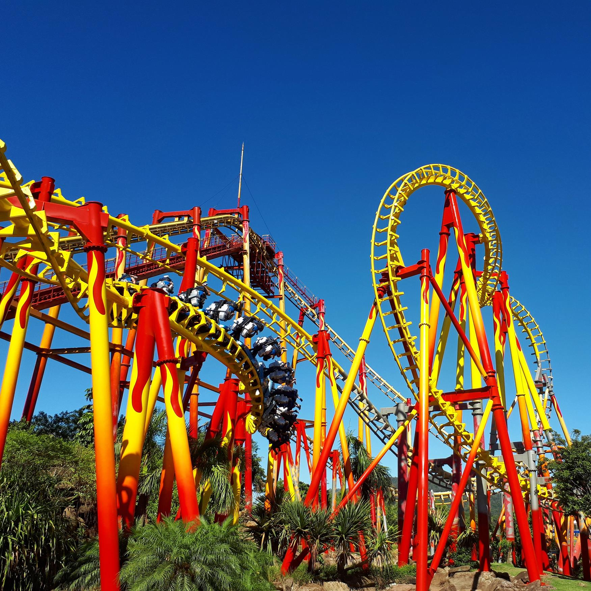
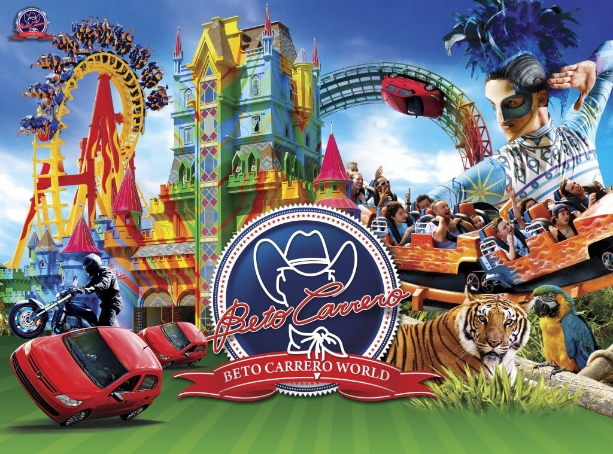
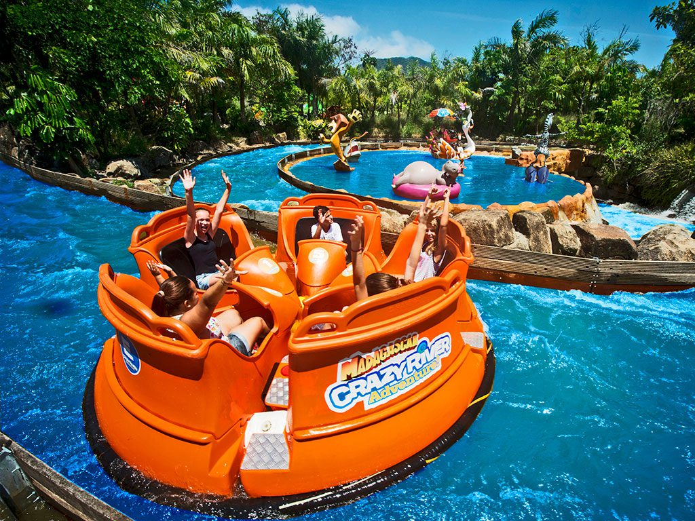
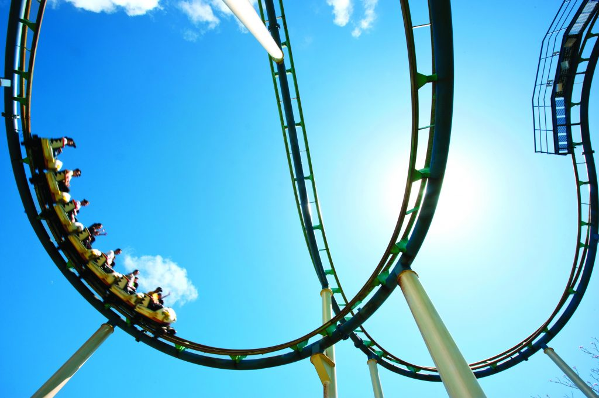

Detalhes do Roteiro
Se você está planejando uma visita ao Beto Carrero World com um grupo de sua empresa, nós podemos lhe ajudar!
Disponibilizamos de pacotes corporativos personalizados para empresas que desejam promover integração, motivação ou celebrações especiais com seus colaboradores. Esses pacotes combinam diversão com experiências que reforçam o trabalho em equipe e o engajamento organizacional.
O maior parque de diversões da América Latina oferece mais de 80 atrações entre brinquedos radicais, shows temáticos e um zoológico com mais de 700 animais vindos de todas as partes do mundo.Além da grandiosa área de diversão e lazer, o parque também conta com estrutura completa de alimentação, compras e apoio para os os visitantes.
O Parque Beto Carrero World está localizado na cidade de Penha (SC), a 120 km de Florianópolis, 27 km de Balneário Camboriú, e 195 Km de Curitiba (PR).
Serviços incluído no pacote:
Translado in/out partindo de Curitiba ou outras cidades do Paraná;
Programação
- h30min – Saída de Curitiba ou outra cidade a consultar;
- h00min – Entrada no Parque;
- h15min – Saída do parque;
- h00min – Chegada prevista em Curitiba ou outra cidade a consultar.
Serviços não inclusos
- Qualquer outro serviço que não esteja especificado anteriormente;
- Gastos de caráter pessoal;
- Refeições não mencionadas como inclusas;
- Passeios informados como opcional.
Informações importantes
- Desconto no passaporte: Tarifas especiais para grupos, com cortesia a cada 20 pagantes para o organizador.
- Estacionamento gratuito: Disponível para vans e ônibus.
- Área exclusiva para grupos: Espaço com mesas e cadeiras para refeições e descanso.
- Alimentação: Opções de buffet ou lanches rápidos para grupos.
- Guia turístico: Disponível para grupos, proporcionando uma experiência mais enriquecedora.
- Translado privativo em carros, vans, micro-ônibus e ônibus executivos;(depende número de pessoas);
- Vantagens de um Pacote Corporativo:
- Integração e Engajamento da Equipe - Promove a socialização fora do ambiente de trabalho, fortalecendo laços entre colegas e melhorando o clima organizacional.
- Motivação e Valorização dos Colaboradores - Proporciona um sentimento de reconhecimento, o que pode aumentar a motivação e reduzir a rotatividade.
- Customização do Roteiro - As atividades, hospedagem e alimentação podem ser adaptadas ao perfil da empresa, dos colaboradores e dos objetivos do evento (como treinamentos ou confraternizações).
- Melhores Condições Comerciais - Empresas costumam obter descontos por volume, condições de pagamento facilitadas e serviços exclusivos que não são oferecidos em pacotes individuais.
- Logística facilitada - Organizamos toda parte de transporte, reservas e alimentação é organizada, poupando tempo da equipe interna.
- Experiência Memorável - Organizamos um pacote, onde pode gerar memórias positivas, reforçar a cultura organizacional e melhorar a percepção de sua empresa pelos seus funcionários.
- Possibilidade de Atividades Estratégicas - Em todos nossos pacotes corporativos, é possível incluir workshops, dinâmicas de grupo, treinamentos ao ar livre e palestras, tudo em um ambiente mais descontraído e receptivo.
Galeria de Fotos



